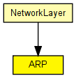

Implements the Address Resolution Protocol for IPv4 and IEEE 802 6-byte MAC addresses.
Expects IPRoutingDecision control info objects to be attached to packets coming from higher layers. ARP packets are represented by the ARPPacket class. Datagrams to be sent and incoming ARP packets are expected to on gate ipIn.
ARP resolution is used over broadcast interfaces only, that is, over interfaces that have the isBroadcast() flag set in InterfaceEntry (see InterfaceTable). Since routing files (.irt or .mrt files, given as parameter to RoutingTable) may modify the default interface configuration, you must take care that these files don't contain the word BROADCAST e.g. for PPP interfaces.
The following diagram shows usage relationships between types. Unresolved types are missing from the diagram. Click here to see the full picture.
The following diagram shows inheritance relationships for this type. Unresolved types are missing from the diagram. Click here to see the full picture.
If a module type shows up more than once, that means it has been defined in more than one NED file.
| NetworkLayer (compound module) |
Network layer of an IP node. |
| Name | Type | Default value | Description |
|---|---|---|---|
| retryTimeout | double | 1s |
number seconds ARP waits between retries to resolve an IP address |
| retryCount | int | 3 |
number of times ARP will attempt to resolve an IP address |
| cacheTimeout | double | 120s |
number seconds unused entries in the cache will time out |
| proxyARP | bool | true |
sets proxy ARP mode (replying to ARP requests for the addresses for which a routing table entry exists) |
| Name | Value | Description |
|---|---|---|
| display | i=block/layer |
| Name | Direction | Size | Description |
|---|---|---|---|
| ipIn | input | ||
| nicOut [ ] | output |
// // Implements the Address Resolution Protocol for IPv4 and IEEE 802 6-byte // MAC addresses. // // Expects IPRoutingDecision control info objects to be attached to packets // coming from higher layers. \ARP packets are represented by the ARPPacket // class. Datagrams to be sent and incoming \ARP packets are expected to // on gate ipIn. // // \ARP resolution is used over <i>broadcast</i> interfaces only, // that is, over interfaces that have the <tt>isBroadcast()</tt> flag set in // <tt>InterfaceEntry</tt> (see InterfaceTable). Since routing files // (<tt>.irt</tt> or <tt>.mrt</tt> files, given as parameter to RoutingTable) // may modify the default interface configuration, you must take care that // these files don't contain the word <tt>BROADCAST</tt> e.g. for PPP // interfaces. // simple ARP { parameters: double retryTimeout @unit("s") = default(1s); // number seconds ARP waits between retries to resolve an \IP address int retryCount = default(3); // number of times ARP will attempt to resolve an \IP address double cacheTimeout @unit("s") = default(120s); // number seconds unused entries in the cache will time out bool proxyARP = default(true); // sets proxy \ARP mode (replying to \ARP requests for the addresses for which a routing table entry exists) @display("i=block/layer"); gates: input ipIn @labels(ARPPacket,IPDatagram); output nicOut[] @labels(ARPPacket); }